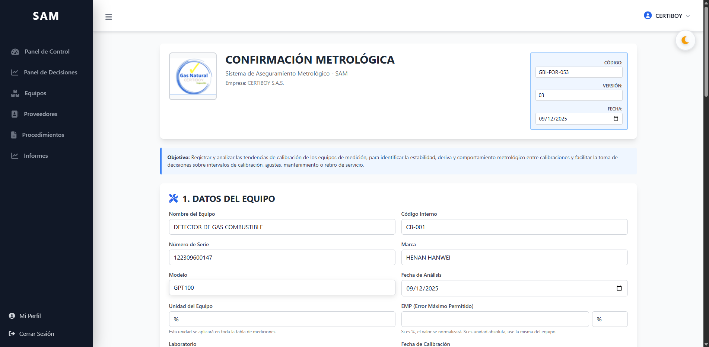
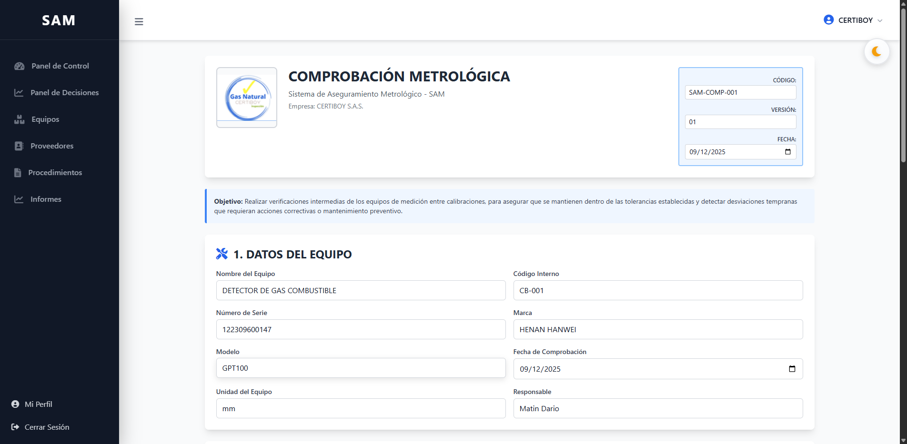

Sistema de Aseguramiento Metrológico
Versión 8.5 | Diciembre 2025
https://sammetrologia.com
Vista principal con alertas de vencimientos y próximas actividades.
| Sección | Uso |
|---|---|
| Dashboard | Resumen |
| Equipos | Inventario |
| Actividades | Calendario |
| Reportes | PDFs/Excel |
Análisis de aptitud metrológica (ISO 10012:2003)
Verificaciones intermedias (ISO 17020:2012)
| Reporte | Contenido |
|---|---|
| Hoja Vida | Historial completo |
| Vencimientos | Próximas fechas |
| Excel | Listado equipos |
| ZIP Masivo | Todos PDFs |
| Estado | Significado |
|---|---|
| ● Operativo | En uso normal |
| ● Próximo | Vence en 30 días |
| ● Vencido | Requiere calibración |
¿Editar calibración?
Sí, desde Calibraciones > Editar
¿PDF muy grande?
Comprimir antes (máx 10 MB)
¿Agregar usuarios?
Solo administradores
¿Datos seguros?
Sí, multiempresa aislado
https://sammetrologia.com
metrologiasam@gmail.com